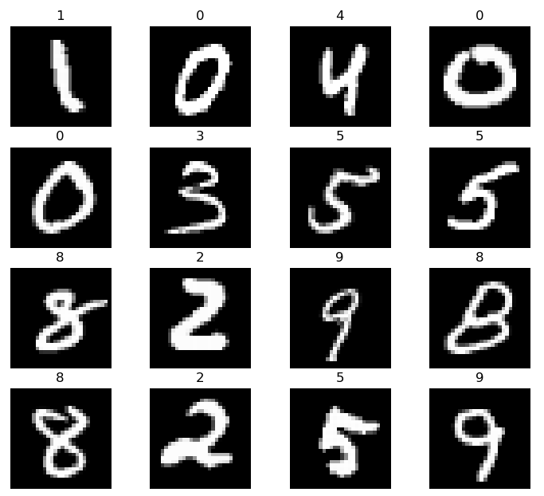
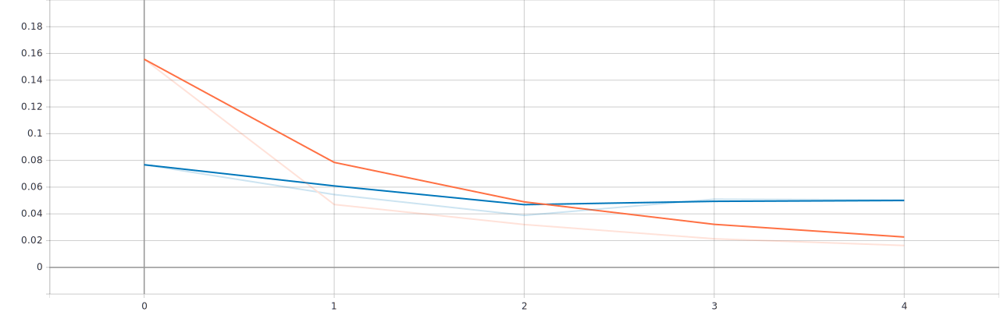

实验1：手写数字识别
实验内容
搭建Tensorflow的卷积神经网络，实现手写数字是识别。
数据集
MNIST数据集是NIST（美国国家标准与技术研究院）收集大型手写数字的数据子集。其包含训练集60000个，测试集10000个。所有的图像固定28×28尺寸、均为灰度图像、且图像居中。可在http://yann.lecun.com/exdb/mnist/下载数据集。

网络架构

- 输入：归一化的28×28灰度图像
- 第1卷积层：32个5×5卷积核对28×28的输入图像卷积，步长为1，激活函数采用ReLU，得到32×28×28的特征图
- 第2池化层：对32×28×28的特征图进行池化，步长为2，池化核大小2×2，得到32×14×14的特征图
- 第3卷积层：64个5×5卷积核对32×14×14的特征图卷积，步长为1，激活函数采用ReLU，得到64×14×14的特征图
- 第4池化层：对64×14×14的特征图进行池化，步长为2，池化核大小2×2，得到64×7×7的特征图
- 第5、6、7全连接层：将第4池化层得到64×7×7的特征图展开为3136单元，送入第5、第6、第7全连接层，然后softmax输出10类。
实验环境
运行依赖
Python3.8.8
- tensorflow-2.2：神经网络框架
- matplotlib：绘图工具包
- numpy：科学计算包
- datetime：时间管理器
- os：系统文件管理器
运行环境
GPU：GeoForce GTX 1660 Ti with Max-Q Design
实验原理
数据预处理
data_loader.py负责加载数据集、划分训练集、测试集和部分数据预处理。其代码如下。
x'''Author: snake8859Date: 2021-04-21 10:43:45LastEditTime: 2021-05-18 14:35:50LastEditors: Please set LastEditorsDescription: 手写体数据集加载器FilePath: \code\data_loader.py'''import numpy as npimport tensorflow as tfimport matplotlib.pyplot as pltclass MNISTLoader(): '''MNIST 数据获取和预处理''' def __init__(self): # 自动下载MNIST数据集 mnist = tf.keras.datasets.mnist # 训练集和测试集划分 (self.train_data, self.train_label), (self.test_data, self.test_label) = mnist.load_data() # 训练集和测试集增加一个颜色通道维度，其值为像素值(unint8)归一化到0-1(float32) ''' 在 TensorFlow 中，图像数据集的一种典型表示是 [图像数目，长，宽，色彩通道数] 的四维张量。 ''' self.train_data = np.expand_dims(self.train_data.astype(np.float32) / 255.0, axis = -1) # [60000, 28, 28, 1] self.test_data = np.expand_dims(self.test_data.astype(np.float32) / 255.0, axis = -1) # [10000, 28, 28, 1] self.train_label = self.train_label.astype(np.int32) # [60000] self.test_label = self.test_label.astype(np.int32) # [10000] # 计算训练集和测试集的个数 self.num_train_data, self.num_test_data = self.train_data.shape[0], self.test_data.shape[0] def get_batch(self, batch_size): ''' @description: 随机从数据集取出batch_size个数据对象并返回 @param batch_size 每批数据对象个数 @return train_data 数据 train_label 标签 ''' index = np.random.randint(0, self.num_train_data, batch_size) return self.train_data[index, :], self.train_label[index] def show_img(self, batch_size = 16): ''' @description: 显示数据和标签 @param batch_size 显示数据个数, 默认16 @return None ''' show_data, show_label = self.get_batch(batch_size) # print(show_data.shape, show_data.dtype, type(show_data)) # (batch_size, 28, 28, 1) col = 0 for i in range(batch_size): img = show_data[i] img_label = show_label[i] # print(img.shape, img_label.shape) # (28, 28, 1) cur_spec = (col, i % 4) if (i + 1) % 4 == 0: # 每4个换行 col +=1 plt.subplot2grid((4, 4), cur_spec) plt.imshow(img, cmap='gray') plt.title(img_label) plt.axis('off') plt.show()if __name__ == "__main__": data_loader = MNISTLoader() data_loader.show_img(16)构建神经网络
复杂式网络构建
handwriting_recognition_complex.py中采用面向对象方式构建卷积神经网络，其代码如下。
class CNN(tf.keras.Model): ''' 模型构建: 卷积神经网络的结构和多层感知器结构类似，只是在多层感知器之前新加入一些卷积层和池化层。 卷积层和池化层主要用于图像的特征提取，它是基于大脑的视觉皮层启发，引入感受野（Receptive Field）这一概念。 【视觉皮层中的神经元并非与前一层的所有神经元相连，而只是感受这一片区域内的视觉信号，并只对局部区域的视觉刺激进行反应】 CNN的卷积层正体现这一特性。 ''' def __init__(self): super().__init__() # 定义网络第1层：卷积层 self.conv1 = tf.keras.layers.Conv2D( filters = 32, # 卷积核个数 kernel_size = [5, 5], # 卷积大小（感受野大小） padding = 'same', # padding策略(vaild 或 same) activation=tf.nn.relu # 激活函数 ) # 定义网络第2层：池化层 self.pool1 = tf.keras.layers.MaxPool2D( pool_size = [2, 2], # 池化核大小 strides= 2 # 卷积步长 ) # 定义网络第3层：卷积层 self.conv2 = tf.keras.layers.Conv2D( filters = 64, kernel_size = [5,5], padding = "same", activation= tf.nn.relu ) # 定义网络第4层：池化层 self.pool2 = tf.keras.layers.MaxPool2D( pool_size= [2,2], strides= 2 ) # 定义网络第5层：特征拉值 self.flatten = tf.keras.layers.Reshape(target_shape = (7 * 7 * 64, )) # 定义网络第6层：全连接层 self.dense1 = tf.keras.layers.Dense( units = 1024, # 神经元个数 activation=tf.nn.relu # 激活函数 ) # 定义网络第7层：全连接层 self.dense2 = tf.keras.layers.Dense( units = 64, activation = tf.nn.relu ) # 定义网络第8层：全连接层 self.dense3 = tf.keras.layers.Dense( units = 10 ) def call(self, inputs): ''' @description: 前向传播 @param inputs 输入向量 @return output 输出分类结果 ''' c1 = self.conv1(inputs) # [batch_size, 28, 28, 32] p1 = self.pool1(c1) # [batch_size , 14 ,14 ,32] c2 = self.conv2(p1) # [batch_size, 14, 14, 64] p2 = self.pool1(c2) # [batch_size, 7, 7, 64] f = self.flatten(p2) # [batch_size, 3136] d1 = self.dense1(f) # [batch_size, 1024] d2 = self.dense2(d1) # [batch_size, 64] d3 = self.dense3(d2) # [batch_size, 10] output = tf.nn.softmax(d3) # [batch_size, 10] return output面向对象的继承方式构建神经网络，主要通过创建类，然后继承tf.kearas.Model。在继承类中，主要是重写__init__()（构造函数）和call(input)（模型调用）两个方式。

网络的各层定义，主要是通过tf.keras.layers.*定义，其中Dense为全连接层，Conv2D是卷积层，MaxPool2D是最大池化层。他们核心参数如下。
Dense
tf.keras.layers.Dense(units, activation=None, use_bias=True, kernel_initializer='glorot_uniform',bias_initializer='zeros', kernel_regularizer=None, bias_regularizer=None,activity_regularizer=None, kernel_constraint=None, bias_constraint=None,**kwargs)- units：神经元个数
- activation：激活函数
- use_bias：是否使用偏置
- kernel_initializer：神经元初始化方式
- bias_initializer：偏置初始化方式
具体可参考：https://tensorflow.google.cn/versions/r2.2/api_docs/python/tf/keras/layers/Dense
Conv2D
xxxxxxxxxxtf.keras.layers.Conv2D(filters, kernel_size, strides=(1, 1), padding='valid', data_format=None,dilation_rate=(1, 1), activation=None, use_bias=True,kernel_initializer='glorot_uniform', bias_initializer='zeros',kernel_regularizer=None, bias_regularizer=None, activity_regularizer=None,kernel_constraint=None, bias_constraint=None, **kwargs)- filters：卷积核个数
- kernel_size：卷积核大小
- strides：卷积步长
- padding：填充方式
- activation：激活函数
- use_bias：是否使用偏置
- kernel_initializer：卷积核初始化方式
- bias_initializer：偏置初始化方式
具体可参考：https://tensorflow.google.cn/versions/r2.2/api_docs/python/tf/keras/layers/Conv2D
MaxPool2D
xxxxxxxxxxtf.keras.layers.MaxPool2D(pool_size=(2, 2), strides=None, padding='valid', data_format=None, **kwargs)- pool_size：池化大小
- strides：池化步长
- padding：填充方式
具体可参考：https://tensorflow.google.cn/versions/r2.2/api_docs/python/tf/keras/layers/MaxPool2D
简单式网络构建
对于简单的神经网络，一般通过一堆层按照特定顺序叠加起来，那么可以采用Sequential API方式建立神经网络。其代码如下。
xxxxxxxxxx''' Keras Sequential API 方式创建简单网络模型； 通过向tf.kears.models.Sequential()提供一个层的列表，快速建立一个tf.kears.Model模型'''# CNN模型cnn_modle = tf.keras.models.Sequential([ tf.keras.layers.Conv2D(filters = 32, kernel_size = [5,5], padding = 'same', activation= tf.nn.relu), # 第1卷积层 tf.keras.layers.MaxPool2D( pool_size = [2, 2],strides= 2), # 池化层 tf.keras.layers.Conv2D(filters = 64, kernel_size = [5,5], padding = 'same', activation= tf.nn.relu), # 第2卷积层 tf.keras.layers.MaxPool2D( pool_size = [2, 2],strides= 2), # 池化层 tf.keras.layers.Flatten(), # 将图片拉直为一维向量 tf.keras.layers.Dense(units = 100, activation = tf.nn.relu), # 隐含层：100个神经元，激活函数ReLU tf.keras.layers.Dense(units = 10, activation = tf.nn.softmax) # 输出层：10个神经元，激活函数softmax])训练和测试
训练
主动式训练
所谓主动式训练是指用户主动获取小批量数据，然后调用模型，计算损失，然后进行梯度更新，保存参数和记录训练细节等。其中每一步都由用户主动调用相关函数实现，其自由度大，但过程相对复杂。其代码如下。
xxxxxxxxxxdef train(num_epochs, batch_size, num_batches, learning_rates, log_dir, save_dir):'''@description: 模型训练@paramnum_epochsbatch_sizenum_batcheslearning_rateslog_dirsave_dir@return model'''# 模型实例化model = CNN()# 实例化模型优化器optimizer = tf.keras.optimizers.Adam(learning_rate=learning_rate) # Adam优化器# 实例化CheckPoint，设置保存模型对象check_point = tf.train.Checkpoint(myMode = model)# 实例化记录器summary_writer = tf.summary.create_file_writer(log_dir)# 迭代训练for batch_index in range(num_batches):x, y_true = dataLoader.get_batch(batch_size) # 每次迭代随机取batch_size个数据# print(x, x.shape, type(x))# print(y_true, y_true.shape, type(y_true))# break# 计算损失with tf.GradientTape() as tape:y_pred = model(x)# 交叉熵损失loss = tf.keras.losses.sparse_categorical_crossentropy(y_true = y_true, y_pred = y_pred) # batch_size个样本的交叉熵损失综合loss = tf.reduce_mean(loss) # batch_size个样本的交叉熵损失平均print("batch {0}: loss {1}".format(batch_index + 1, loss.numpy()))loss_list.append(loss.numpy()) # 记录损失if batch_index % 1000 == 0: # 每隔1000个Batch保存一次模型path = check_point.save(save_dir + '/mnist_model.ckpt')print('model saved to {0}'.format(path))# 开启记录器上下文环境with summary_writer.as_default():tf.summary.scalar('loss', loss, step = batch_index) # 记录当前损失值# 计算损失函数关于权重的梯度grads = tape.gradient(loss, model.variables)# 根据梯度下降，更新权重optimizer.apply_gradients(grads_and_vars = zip(grads, model.variables))# 绘制损失变化状态batch_np = np.arange(0, num_batches)loss_np = np.array(loss_list)fig, ax = plt.subplots()ax.plot(batch_np, loss_np)ax.set(xlabel='num_step', ylabel='loss',title='loss state')ax.grid()# plt.show()plt.savefig('Handwriting_LOSS_{0}.png'.format(num_batches))return model配置式训练
所谓配置式训练是指，通过指定模型采用的优化器、损失函数和评估指标，调用
compile配置模型；接着给模型加载相应要求的数据、定义批次大小、迭代次数和记录器，调用fit适配模型，进行训练；最后通过save方法保存模型。其过程中用户主要关心模型所需要各种适配器（优化器、损失函数、评估器、记录器等）和训练基本信息（data、batch_size、epochs），具体的训练细节交予框架实现。其代码如下。xxxxxxxxxx'''当模型建立完成后，通过tf.kears.Model的complie方法，配置训练过程'''# 模型配置cnn_modle.compile(optimizer = tf.keras.optimizers.Adam(learning_rate = 0.001), # 优化器loss = tf.keras.losses.sparse_categorical_crossentropy, # 损失函数metrics = [tf.keras.metrics.sparse_categorical_accuracy] # 评估指标)'''当模型配置完成后，通过tf.kears.Model的fit方法训练模型'''# 实例化数据对象dataLoader = MNISTLoader()# 创建TensorBoard回调函数fit_log_dir = './tensorboard/bySimple/' + datetime.datetime.now().strftime("%Y%m%d-%H%M%S")tensorboard_callback = tf.keras.callbacks.TensorBoard(log_dir = fit_log_dir, # 输出路径histogram_freq = 1, # 统计每层直方图profile_batch = 0, # 不启动profileupdate_freq = 'batch' # 更新频次，以batch)os.makedirs(fit_log_dir + '/train/') # 创建目录cnn_modle.fit(x = dataLoader.train_data, # 训练数据y = dataLoader.train_label, # 标签数据validation_split=0.3, # 验证集划分batch_size = 50, # 批次大小epochs = 5, # 将训练数据迭代多少次callbacks = [tensorboard_callback] # tensorboard回调函数)'''当模型训练完成之后，保存模型'''save_path = './save/bySimple/'tf.saved_model.save(cnn_modle, save_path)
测试
可以通过两种方式进行测试，一种是基于复杂式网络构建，具体过程是定义模型评估器，然后主动记录模型的性能；另一种基于简单式网络构建，是直接调用模型的evaluate评估训练效果。
xxxxxxxxxxdef evaluation(batch_size, model): ''' @description: 模型评估 @param batch_size model 训练模型 @return None ''' # # 模型评估 # ''' # 这里使用tf.keras.metrics中的 SparseCategoricalAccuracy 评估器来评估模型在测试集上的性能。 # 过程： # 1.迭代测试集数据，利用模型预测估计值，然后调用update_state(y_pred, y_true)，来计算预测值和真实值的误差。 # 2.迭代结束后，调用result()输出最终的评估指标值（预测正确的样本占总样本的比例） # ''' # 实例化模型评估器 sparse_categorical_accuracy = tf.keras.metrics.SparseCategoricalAccuracy() num_batches_test = int(dataLoader.num_test_data // batch_size) # 计算迭代次数：每次取batch_size个测试集数据 for batch_index in range(num_batches_test): # 计算测试集样本的切片 start_index, end_index = batch_index * batch_size, (batch_index + 1) *batch_size # 计算模型预测值 y_pred = model.predict(dataLoader.test_data[start_index: end_index]) # [batch_size, 10] # print(y_pred, y_pred.shape, type(y_pred)) y_true = dataLoader.test_label[start_index: end_index] # print(y_true, y_true.shape, type(y_true)) # 评估器进行评估 sparse_categorical_accuracy.update_state(y_true= y_true, y_pred = y_pred) # 输出评估的结构 print("test accuracy: {0}".format(sparse_categorical_accuracy.result())) ''' test accuracy: 0.9894000291824341 '''xxxxxxxxxx''' 当模型训练完成之后，通过tf.kears.Model的evaluate评估训练效果'''print('test accuracy: {0}'.format(cnn_modle.evaluate( dataLoader.test_data, dataLoader.test_label )))实验结果
利用tensorflow自带的tensorboard将训练过程可视化，其中损失和正确率曲线如下图所示。（蓝色验证集，橙色训练集）
- 损失函数

正确率